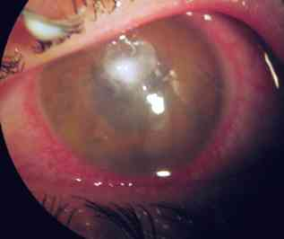
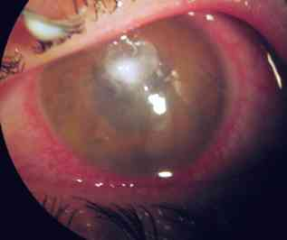
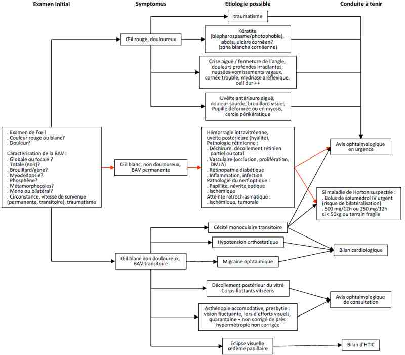

Bienvenue Sur Medical Education
Baisse brutale d'acuité visuelle
Spécialité : ophtalmologie /
Points importants
-
Toute baisse d'acuité visuelle récente et persistante implique un avis ophtalmologique urgent
-
Caractériser précisément une baisse d'acuité visuelle oriente fortement vers l'étiologie
-
Une baisse d'acuité visuelle peut être secondaire à :
-
un défaut réfractif (accommodation, diamètre pupillaire, correction optique)
-
un trouble des milieux optiques (cornée, humeur aqueuse, cristallin et capsule, vitré)
-
une pathologie rétinienne ou du nerf optique
-
une pathologie extraoculaire (rétrochiasmatique, vertébrobasillaire, corticale)
-
Savoir évoquer une Maladie de Horton car :
-
la baisse d'acuité visuelle est en règle définitive
-
une atteinte initialement unilatérale peut se bilatéraliser à tout moment
-
une perfusion de corticoïde immédiate en bolus peut éviter une cécité complète
Présentation clinique / CIMU
SIGNES FONCTIONNELS
-
Œil rouge et douloureux
-
ou oeil blanc non douloureux
CONTEXTE
- un défaut réfractif (accommodation, diamètre pupillaire, correction optique)
- un trouble des milieux optiques (cornée, humeur aqueuse, cristallin et capsule, vitré)
- une pathologie rétinienne ou du nerf optique
- une pathologie extraoculaire (rétrochiasmatique, vertébrobasillaire, corticale)
- la baisse d'acuité visuelle est en règle définitive
- une atteinte initialement unilatérale peut se bilatéraliser à tout moment
- une perfusion de corticoïde immédiate en bolus peut éviter une cécité complète
Présentation clinique / CIMU
SIGNES FONCTIONNELS
- Œil rouge et douloureux
- ou oeil blanc non douloureux
CONTEXTE
Terrain
- Traumatisme : kératite, DR, hémorragie intraoculaire, nerf optique
- Port de lentille souple : kératite
- Femme, > 40 ans, hypermétrope : crise aiguë de fermeture de l'angle
- Maladie de système inflammatoire ou infectieuse : uvéite
- Femme, > 65 ans, polyarthralgies (PPR), douleurs superficielles crânio-temporales, VS élevée : maladie de Horton
- Diabétique mal suivi, mal équilibré : pathologie (vitréo-)rétinienne
- Adulte > 45 ans, scotome central isolé : DMLA, néo-vaisseau maculaire
- Forte myopie ou opération de la cataracte : DR
- Intervention chirurgicale récente, oeil douloureux : endophtalmie
- Cardio-vasculopathies, HTA : AIT, occlusion vasculaire rétinienne, HTO
- Adulte, la quarantaine, voyant bien de loin, non corrigé de près : asténopie accommodative, presbytie
Traitement usuel possiblement responsable
- Collyres myotiques, mydriatiques, cycloplégiques (atropine, tropicamide, skiacol, néosynéphrine ...)
- Médicament actifs sur le SNV
- Psychotropes (scopolamine, opiacés...)
Antécédents
- Cardio-vasculaires
- Diabète
- Intervention chirurgicale oculaire
- Parent direct ayant une DMLA
- Maladie de système
Facteurs de risque (très variables, ils dépendent de l'étiologie)
- Trouble réfractif important : forte myopie ou forte hypermétropie
- Port de lentilles souples
- Traumatisme oculaire
Circonstances de survenue (très variables, dépendent directement de l'étiologie)
- Vitesse d'apparition
- Baisse d'acuité visuelle permanente ou transitoire
- Notion de traumatisme
EXAMEN CLINIQUE
- Précise l'altération visuelle pour orienter l'étiologie
Examen général des 2 yeux
- Rechercher hyperhémie : cercle rouge périkératique (autour de la cornée)
- Calme, non inflammatoire (blanc)
- Rechercher douleur
- Réflexe pupillaire direct et consensuel, mobilité oculaire
Caractérisation de la baisse d'acuité visuelle
- Mode de survenue immédiat ou progressif rapide
- Globale (sur tout le champ visuel) ou focale (n'affecte qu'une zone)
- Totale (zone de vision noire) ou partielle (brouillard/gêne)
- Myodésopsies (mouches volantes), phosphène (éclair lumineux)
- Métamorphopsies (vision déformée)
- Uni ou bilatéral
Examen général (recherche d'étiologie devant être prise en charge dès les urgences générales)
-
Prise des pouls :
- troubles du rythme cardiaque (CMT, occlusion vasculaire rétinienne)
- absence de pouls temporal (Horton)
- douleurs radiculaires des membres, douleurs temporales (Horton)
- Examen neurologique :
- Bilan traumatique associé selon le contexte
EXAMENS PARACLINIQUES SIMPLES
- Selon étiologie
- Glycémie capillaire
- ECG (troubles du rythme)
CIMU
- Tri 2
Signes paracliniques
BIOLOGIQUE
-
Glycémie capillaire : si diabète
-
Vitesse de sédimentation : recherche d'une maladie de Horton
-
Bilan de coagulation : trouble des facteurs de coagulation, élévation de l'hématocrite
IMAGERIE
-
TDM selon le contexte et le type de baisse d'acuité visuelle :
-
orbitaire : intégrité du globe oculaire et du nerf optique
-
crânio-encéphalique : recherche de processus occupant l'espace et de signes d'HTIC
Diagnostic étiologique
ŒIL ROUGE ET DOULOUREUX
-
Traumatisme contusif ou toxique, ulcère de cornée
-
Infection :
-
kératite
-
abcès de cornée
-

_611
Photo
Abcès de cornée
-
endophtalmie
-
Inflammation : uvéite antérieure
-
Hypertonie oculaire aiguë par fermeture de l'angle irido-cornéen
-
Trouble réfractif aigu :
-
asténopie accommodative
-
strabisme paralytique
ŒIL CALME ET NON DOULOUREUX
-
Hémorragie intraoculaire de la chambre antérieure (hyphéma), du vitré
-
Décollement de rétine
-
Occlusion vasculaire rétinienne (veine, artère) ou du nerf optique (NOIAA)
-
Pathologie rétinienne :
-
DMLA
-
néo-vaisseaux fovéolaires
-
processus infectieux (toxoplasmose++, Toxocara canis, HSV, CMV),
-
Inflammation vitréenne (hyalite)
-
Neuropathie optique :
-
traumatisme
-
compression
-
inflammation (NORB)
-
oedème
-
atteintes rétro-chiasmatiques
-
Pathologie générale causale :
-
embole ou inflammation vasculaire
-
hypotension orthostatique
-
migraine avec aura ophtalmique
-
HTIC
Diagnostic différentiel
-
Trouble de l'étalement des larmes sur la surface oculaire (syndrome sec, pathologies palpébrales)
-
Baisses d'acuité visuelle progressives
-
Diplopie
-
Hallucination visuelle
-
Cécité corticale, AVC, AIT occipital ou vertébrobasillaire
-
Découverte soudaine d'une baisse d'acuité visuelle ancienne
-
Méningite (photophobie)
-
Cécité psychogène pathologique
-
Simulation
Traitement
TRAITEMENT PREHOSPITALIER / INTRAHOSPITALIER
- orbitaire : intégrité du globe oculaire et du nerf optique
- crânio-encéphalique : recherche de processus occupant l'espace et de signes d'HTIC
Diagnostic étiologique
ŒIL ROUGE ET DOULOUREUX
- Traumatisme contusif ou toxique, ulcère de cornée
-
Infection :
- kératite
-
abcès de cornée
-  _611 Photo Abcès de cornée
- endophtalmie
- Inflammation : uvéite antérieure
- Hypertonie oculaire aiguë par fermeture de l'angle irido-cornéen
-
Trouble réfractif aigu :
- asténopie accommodative
- strabisme paralytique
ŒIL CALME ET NON DOULOUREUX
- Hémorragie intraoculaire de la chambre antérieure (hyphéma), du vitré
- Décollement de rétine
- Occlusion vasculaire rétinienne (veine, artère) ou du nerf optique (NOIAA)
-
Pathologie rétinienne :
- DMLA
- néo-vaisseaux fovéolaires
- processus infectieux (toxoplasmose++, Toxocara canis, HSV, CMV),
- Inflammation vitréenne (hyalite)
-
Neuropathie optique :
- traumatisme
- compression
- inflammation (NORB)
- oedème
- atteintes rétro-chiasmatiques
-
Pathologie générale causale :
- embole ou inflammation vasculaire
- hypotension orthostatique
- migraine avec aura ophtalmique
- HTIC
Diagnostic différentiel
-
Trouble de l'étalement des larmes sur la surface oculaire (syndrome sec, pathologies palpébrales)
-
Baisses d'acuité visuelle progressives
-
Diplopie
-
Hallucination visuelle
-
Cécité corticale, AVC, AIT occipital ou vertébrobasillaire
-
Découverte soudaine d'une baisse d'acuité visuelle ancienne
-
Méningite (photophobie)
-
Cécité psychogène pathologique
-
Simulation
Traitement
TRAITEMENT PREHOSPITALIER / INTRAHOSPITALIER
Traitement
TRAITEMENT PREHOSPITALIER / INTRAHOSPITALIER
Stabilisation initiale
-
Traiter une maladie de Horton dans le doute :
- bolus IV de corticoïde le plus rapidement possible, après prélèvement sanguin (pour analyse de la VS)
- Traiter une HTIC
Suivi du traitement
- Demande d'avis ophtalmologique en urgence
- Seul l'examen ophtalmologique peut poser le diagnostic qui conditionne le traitement
MEDICAMENTS
-
NOIAA de la maladie de Horton :
- méthylprednisolone en bolus IV 500 mg IV/12h ou 250 mg IV/12h si < 50 kg ou terrain fragile
- sur avis ophtalmologique en urgence, selon le diagnostic
Surveillance
CLINIQUE
-
Contrôle de l'acuité visuelle controlatérale, des douleurs temporales,
-
Contrôle des constantes neurologiques (état de conscience, réflexe pupillaire)
PARACLINIQUE
-
Si bolus corticoïde IV : contrôle de la kaliémie (ECG, Ionogramme sanguin) et de la glycémie capillaire
Devenir / orientation
CRITERES D'ADMISSION
-
Hospitalisation en ophtalmologie selon avis de l'ophtalmologiste
CRITERES DE SORTIE
-
Avis ophtalmologique en urgence après :
-
élimination d'une cause neuro-centrale de prise en charge spécifique (HTIC, méningite)
-
stabilisation éventuelle d'une pathologie associée prévalent le pronostic visuel (polytraumatisme, brûlure, intoxication, état psychiatrique aigu...)
ORDONNANCE DE SORTIE
-
Suivi de soin par l'ophtalmologiste
RECOMMANDATIONS DE SORTIE
-
Avis ophtalmologique en urgence
-
Si DR : positionnement
-
Accompagnement ambulatoire du patient par un tiers, ne pas conduire, rester à jeun si possible (hors diabétiques) jusqu'à l'avis ophtalmologique
Mécanisme / description
-
Une baisse d'acuité visuelle brutale peut être secondaire à :
-
un défaut réfractif (accommodation, diamètre pupillaire, correction optique)
-
un trouble des milieux optiques (cornée, humeur aqueuse, cristallin et capsule, vitré)
-
une pathologie rétinienne ou du nerf optique
-
une pathologie extraoculaire (rétrochiasmatique, vertébrobasillaire, corticale)
-
Les mécanismes de la baisse d'acuité visuelle brutale peuvent être d'origine :
-
optique : accommodation, erreur réfractive, traumatique (cornée, cristallin)
-
inflammatoire
-
infectieux
-
mécanique : fermeture de l'angle, traction vitréenne, déchirure, rupture, compression, traumatisme, HTIC
-
vasculaire : hémorragie, occlusion/ischémie/spasme, néo-vaisseau
-
tumorale (rarement brutal) : compression, extension dans l'axe visuel
Algorithme
-
Agorithme : baisse de l'acuité visuelle
Devenir / orientation
CRITERES D'ADMISSION
- Hospitalisation en ophtalmologie selon avis de l'ophtalmologiste
CRITERES DE SORTIE
-
Avis ophtalmologique en urgence après :
- élimination d'une cause neuro-centrale de prise en charge spécifique (HTIC, méningite)
- stabilisation éventuelle d'une pathologie associée prévalent le pronostic visuel (polytraumatisme, brûlure, intoxication, état psychiatrique aigu...)
ORDONNANCE DE SORTIE
- Suivi de soin par l'ophtalmologiste
RECOMMANDATIONS DE SORTIE
- Avis ophtalmologique en urgence
- Si DR : positionnement
- Accompagnement ambulatoire du patient par un tiers, ne pas conduire, rester à jeun si possible (hors diabétiques) jusqu'à l'avis ophtalmologique
Mécanisme / description
-
Une baisse d'acuité visuelle brutale peut être secondaire à :
-
un défaut réfractif (accommodation, diamètre pupillaire, correction optique)
-
un trouble des milieux optiques (cornée, humeur aqueuse, cristallin et capsule, vitré)
-
une pathologie rétinienne ou du nerf optique
-
une pathologie extraoculaire (rétrochiasmatique, vertébrobasillaire, corticale)
-
Les mécanismes de la baisse d'acuité visuelle brutale peuvent être d'origine :
-
optique : accommodation, erreur réfractive, traumatique (cornée, cristallin)
-
inflammatoire
-
infectieux
-
mécanique : fermeture de l'angle, traction vitréenne, déchirure, rupture, compression, traumatisme, HTIC
-
vasculaire : hémorragie, occlusion/ischémie/spasme, néo-vaisseau
-
tumorale (rarement brutal) : compression, extension dans l'axe visuel
Algorithme
-
Agorithme : baisse de l'acuité visuelle
- un défaut réfractif (accommodation, diamètre pupillaire, correction optique)
- un trouble des milieux optiques (cornée, humeur aqueuse, cristallin et capsule, vitré)
- une pathologie rétinienne ou du nerf optique
- une pathologie extraoculaire (rétrochiasmatique, vertébrobasillaire, corticale)
- optique : accommodation, erreur réfractive, traumatique (cornée, cristallin)
- inflammatoire
- infectieux
- mécanique : fermeture de l'angle, traction vitréenne, déchirure, rupture, compression, traumatisme, HTIC
- vasculaire : hémorragie, occlusion/ischémie/spasme, néo-vaisseau
- tumorale (rarement brutal) : compression, extension dans l'axe visuel
Algorithme
- Agorithme : baisse de l'acuité visuelle
 _10 Algorithme Algorithme : baisse de l'acuité visuelle
Bibliographie
-
Collège des Ophtalmologistes Universitaires de France. Polycopié National. Anomalies de la vision d'apparition brutale. 2008-2009, chap 13, pp95-101
Auteur(s) : Jean-Louis BOURGES